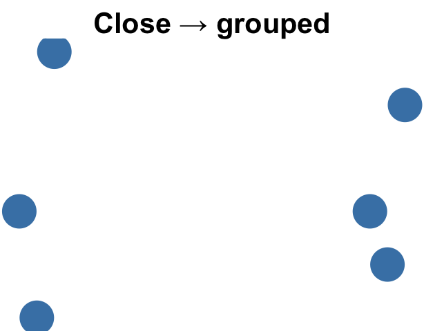
PSY 410: Data Science for Psychology
2026-04-27
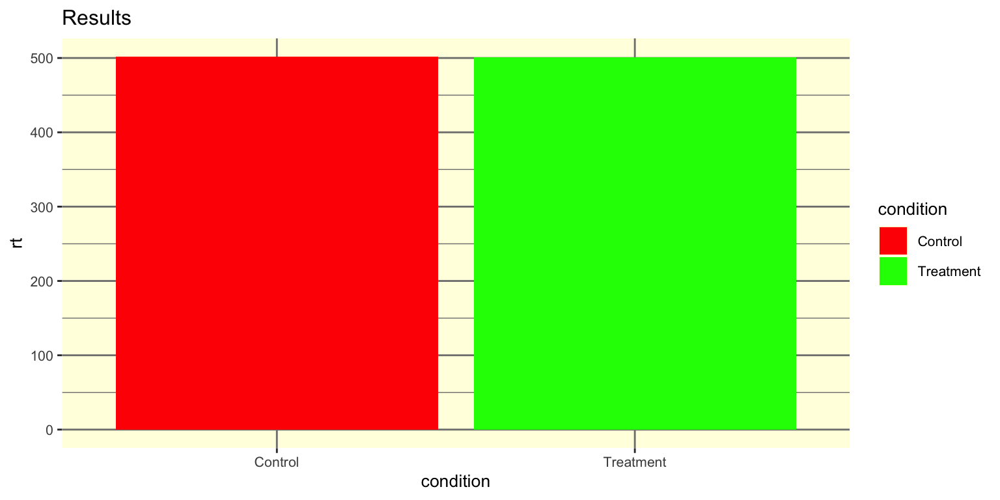
Red-green palette (colorblind-unfriendly). No informative title. Tiny text. Gridline noise. Bars hiding the data.
Today we learn why your brain rejects bad figures — and how to design ones that work.
Some visual features are processed almost instantly — before conscious attention kicks in:
| Attribute | Example |
|---|---|
| Color | A red dot among blue dots |
| Size | A large circle among small ones |
| Position | A point far from the others |
| Shape | A triangle among circles |
| Orientation | A tilted bar among vertical bars |
These are your tools for drawing the viewer’s eye.
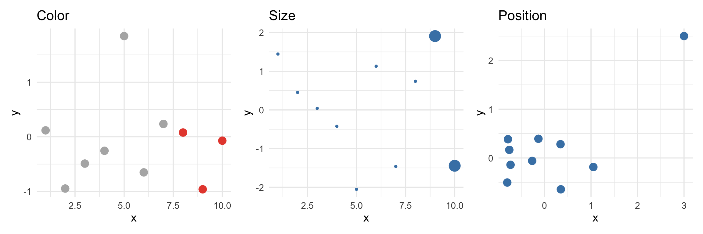
Your eye goes to the red points, the big points, and the outlier — instantly.
Research suggests working memory holds roughly 4 items at a time (Cowan, 2001).
In data visualization, this means:
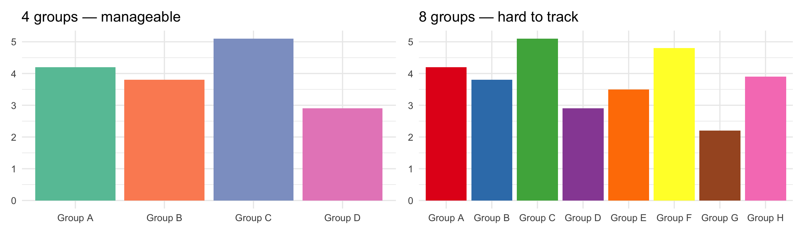
The brain automatically groups visual elements — whether you intend it or not.
Proximity

Nearby items feel like a group
Similarity
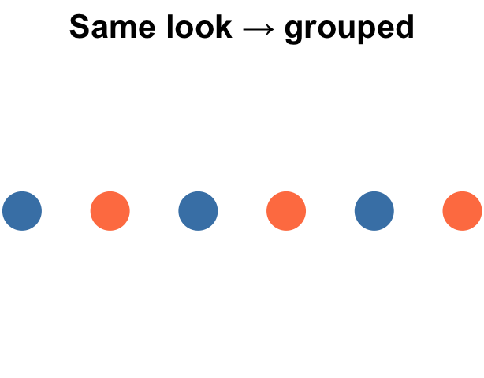
Same appearance = same group
Enclosure
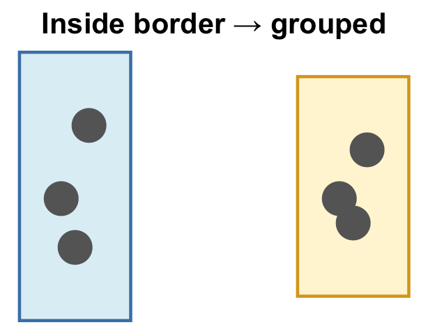
Inside a border = same group
| Principle | How it shows up in your figures |
|---|---|
| Proximity | facet_wrap() puts related panels side by side |
| Similarity | Color-coding makes same-group points feel connected |
| Enclosure | A shaded background or border sets a group apart |
| Continuity | Connecting points across time implies a single trend |
These groupings happen whether you design them or not — use them intentionally.
| Type | When to use | Example |
|---|---|---|
| Sequential | One continuous variable (low → high) | Blues, viridis |
| Diverging | Values relative to a midpoint | Red–white–blue |
| Qualitative | Categorical groups (no order) | Set1, tab10 |
Using the wrong type is one of the most common visualization mistakes.
fill or color?Which aesthetic did you map in aes()? That tells you which scale family to use.
# Geoms with `fill=`: bars, boxplots, tiles, density
ggplot(data, aes(x, y, fill = group)) + geom_boxplot() +
scale_fill_manual(values = c(...)) # ← scale_fill_*
# Geoms with `color=`: points, lines
ggplot(data, aes(x, y, color = group)) + geom_point() +
scale_color_manual(values = c(...)) # ← scale_color_*Same pattern, just swap fill for color throughout.
Match the palette to your data:
| Your data | Function |
|---|---|
| Continuous numeric (e.g., reaction time) | scale_fill_viridis_c() |
| Ordered categories (e.g., dosage levels) | scale_fill_viridis_d() |
| Qualitative groups (e.g., therapy type) | scale_fill_brewer(palette = "Set2") |
| Diverging from a midpoint (e.g., change scores) | scale_fill_distiller(palette = "RdBu") |
| Hand-picked colors | scale_fill_manual(values = c(...)) |
_c for numeric, _d for character/factor. Same options work for scale_color_*.
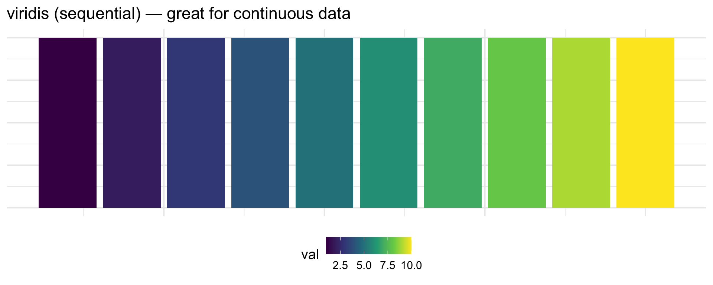
Use when values diverge from a meaningful midpoint — often 0 or a baseline.
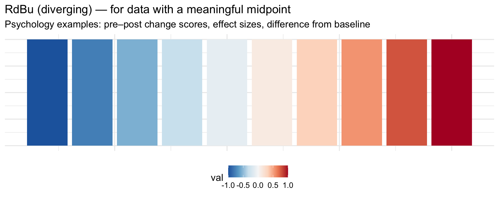
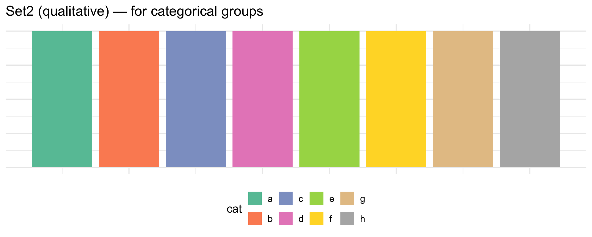
About 8% of men have some form of color vision deficiency. Red-green is the most common.
# viridis is colorblind-safe AND sequential
scale_fill_viridis_d() # discrete
scale_fill_viridis_c() # continuous
# ColorBrewer palettes designed for colorblindness
scale_fill_brewer(palette = "Set2")
# Or set colors manually with safe choices
scale_fill_manual(values = c("#0072B2", "#E69F00", "#009E73"))
# (blue, orange, green — distinguishable for most color vision types)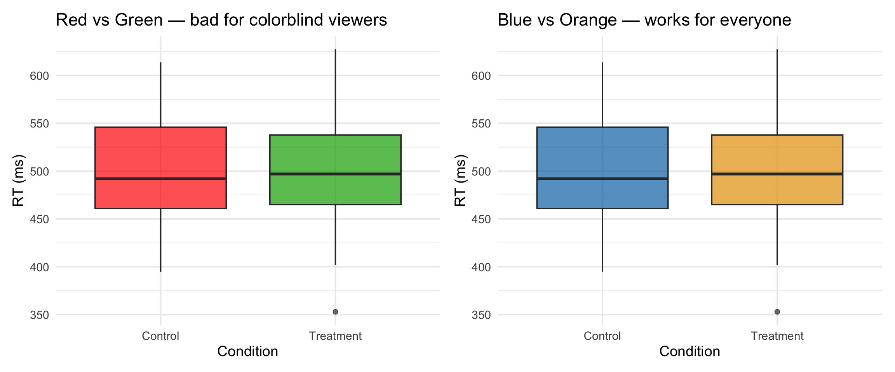
Cognitive load theory (Sweller, 1988) says mental effort has three components:
Intrinsic load
The complexity of the data itself — you can’t reduce it
Extraneous load
Clutter, noise, redundant elements — this is what we control
Germane load
The insight the reader builds — what we’re trying to maximize
Every gray background, redundant legend, and unlabeled variable is extraneous load — it taxes working memory without adding information.
Design goal: minimize extraneous, maximize germane.
ggplot2’s default theme adds a lot of visual noise. Compare:
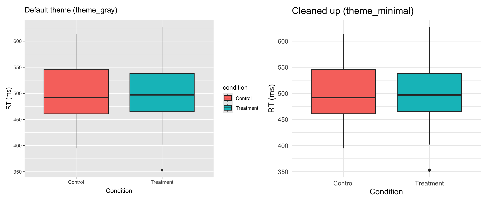
Ask: does this element help the reader understand the data?
Remove
| Element | Why |
|---|---|
| Gray background | Noise, no info |
| Gridlines (most) | Distraction |
| Redundant legend | X-axis says it |
| Generic axis labels | Add units instead |
Keep
| Element | Why |
|---|---|
| Title + subtitle | Orients the reader |
| Caption | Source, N, error bar type |
| Meaningful color | Highlights comparisons |
element_* familyEvery non-data piece of a ggplot is one of four kinds of thing:
| Function | Key arguments | Used for |
|---|---|---|
element_text() |
size, face, color, hjust |
Titles, axis text, legend text |
element_line() |
color, linewidth |
Axis lines, gridlines, ticks |
element_rect() |
fill, color |
Panel background, legend box |
element_blank() |
— | Removes the element entirely |
theme() puts elements to useInside theme(), name the piece of the plot, then assign an element_* function to style it:
theme(
plot.title = element_text(face = "bold", size = 16), # text → bold, larger
panel.grid = element_line(color = "gray90"), # lines → subtle gray
plot.background = element_rect(fill = "white"), # rect → white background
axis.ticks = element_blank(), # blank → remove ticks
legend.position = "none" # special: just "none"/"top"/etc.
)Not sure what an argument is called? Run ?theme — there are ~90 options.
I’ll put a cluttered graph on screen. With a partner, rewrite it to follow the design principles we just covered.
Remove at least 5 unnecessary elements. Make it tell a clear story.
Tip
Think about: colors, legend, labels, theme, size mapping, and whether every aesthetic is adding information.
First, run this to create the dataset:
set.seed(123)
reaction_data <- tibble(
participant = rep(1:40, each = 2),
condition = rep(c("Control", "Treatment"), 40),
rt = c(rnorm(40, mean = 520, sd = 60), rnorm(40, mean = 480, sd = 55)),
accuracy = c(rbinom(40, 1, 0.82), rbinom(40, 1, 0.88)),
age_group = rep(c("Young", "Young", "Older", "Older"), 20)
) |>
mutate(rt = round(rt, 1))Now fix this:
# The cluttered version — fix this!
reaction_data |>
ggplot(aes(x = condition, y = rt, fill = condition, color = condition, size = accuracy)) +
geom_point() +
geom_boxplot(alpha = 0.3) +
scale_fill_manual(values = c("Control" = "red", "Treatment" = "green")) +
scale_color_manual(values = c("Control" = "red", "Treatment" = "green")) +
labs(x = "condition", y = "rt", title = "data") +
theme_gray()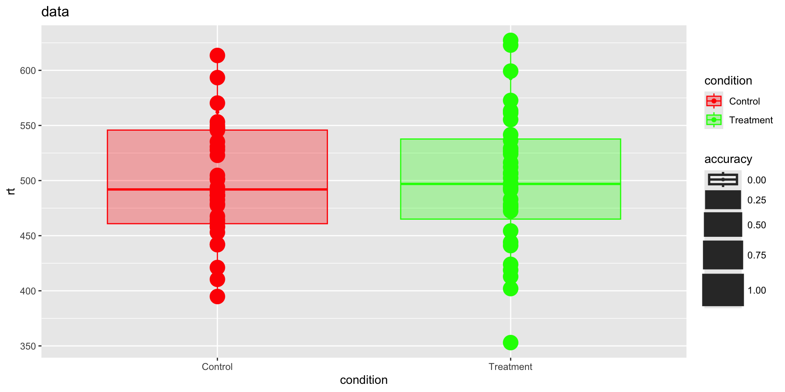
reaction_data |>
ggplot(aes(x = condition, y = rt,
fill = condition,
color = condition)) +
geom_jitter(width = .1) +
geom_boxplot(alpha = 0.3) +
scale_fill_viridis_d() +
scale_color_viridis_d() +
scale_y_continuous(
labels = scales::label_number(suffix = " ms")) +
labs(
x = NULL,
y = NULL,
title = "Reaction time by condition and accuracy",
caption = "Reaction time in miliseconds; 0 = inaccurate, 1 = accurate"
) +
facet_wrap(~accuracy,
labeller = as_labeller(c("0" = "incorrect", "1" = "correct"))) +
theme_bw() +
theme(legend.position = "none",
plot.title.position = "plot")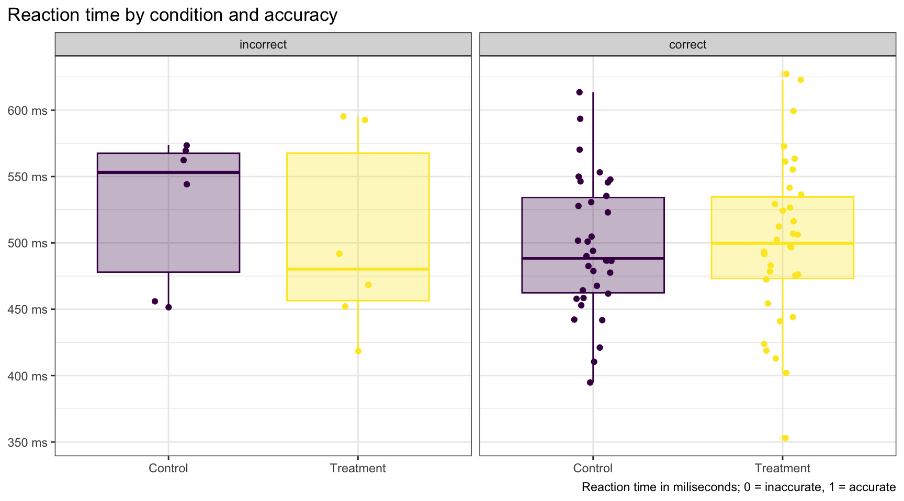
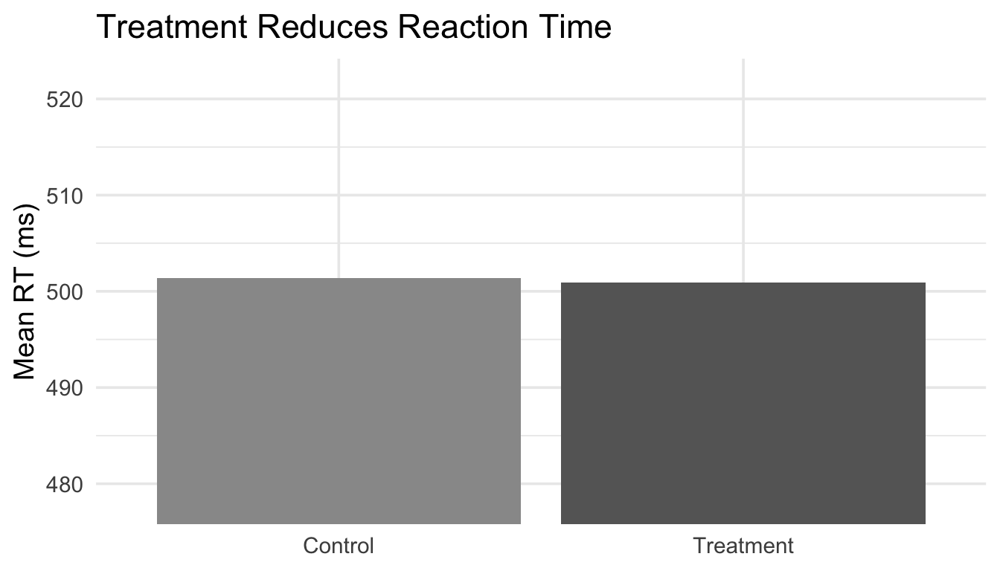
The problem: The y-axis starts at 478, not 0. The difference looks massive — but it’s only ~40 ms. A truncated axis exaggerates the effect.
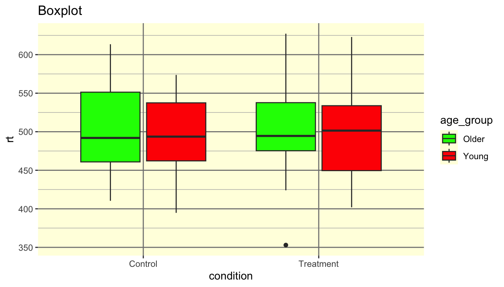
The problems: Red-green palette (colorblind-unfriendly). Title says “Boxplot” (a label, not a finding). Variable names as labels. Distracting background color and gridlines.
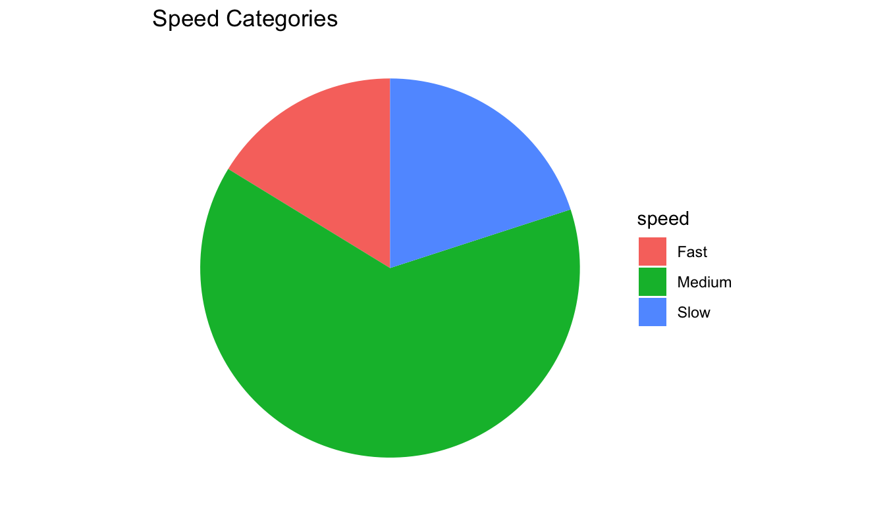
The problems: Continuous data was binned into arbitrary categories, then displayed as a pie chart. We lost the actual reaction times, the condition comparison, and the ability to see distributions. A histogram or density plot would show far more.
Assignment 4 will ask you to:
Start experimenting now:
reaction_data dataset📖 Read:
✅ Practice:
These are not design opinions — they are perceptual psychology.
You’re not designing for yourself. You’re designing for a reader who will look at your figure for five seconds.
Next time: Exploratory Data Analysis
PSY 410 | Session 9